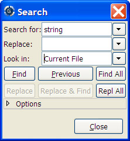

GPS provides extensive search capabilities among its different elements. For instance, it is possible to search in the currently edited source file, or in all the source files belonging to the project, even those that are not currently open. It is also possible to search in the project view (on the left side of the main GPS window), ...
All these search contexts are grouped into a single graphical window, that you can open either through the menu Navigate->Find/Replace..., or the shortcut Ctrl-F.
By default, the search window is floating, ie appears as a dialog on top of GPS. You can choose to put it inside the multiple document interface permanently for easier access. This can be done by selecting the menu Window->Floating, and then drag-and-dropping the search window in a new location if you wish (for instance above the Project View).
Selecting either of these two options will pop up a dialog on the screen, similar to the following:
On this screen shot, you can see three entry fields:
This is the location where you type the string or pattern you are looking for. The search widget supports two modes, either fixed strings or regular expressions. You can commute between the two modes by either clicking on the Options button and selecting the appropriate check box, or by opening the combo box (click on the arrow on the right of the entry field).
In this combo box, a number of predefined patterns are provided. The top two ones are empty patterns, that automatically set up the appropriate fixed strings/regular expression mode. The other regular expressions are language-specific, and will match patterns like Ada type definition, C++ method declaration, ...
This field should contain the string that will replace the occurrences of the pattern defined above. The combo box provides a history of previously used replacement strings. If regular expression is used for search, special escapes 1, 2 .. 9 in this field refer to the corresponding matching sub-expressions and 0 refers whole matched string.
This field defines the context in which the search should occur.
GPS will automatically select the most appropriate context when you open the search dialog, depending on which component currently has the focus. If several contexts are possible for one component (for example, the editor has “Current_File”, “Files from Project”, “Files...” and “Open Files”), then the last one you’ve been using will be selected. You can of course change the context to another one if needed.
Clicking on the arrow on the right will display the list of all possible contexts. This list includes:
Files...
Search in a given set of files. An extra Files box will be displayed where you can specify the files by using standard shell (Unix or Windows) regular expression, e.g. *.ad? for all files ending with .ad and any trailing character. The directory specified where the search starts, and the Recursive search button whether sub directories will be searched as well.
The Scope entry is used to restrict the search to a set of language constructs, e.g. to avoid matching on comments when you are only interested in actual code, or to only search strings and comments, and ignore the code.
Files From Project
Search in all the files from the project, including files from project dependencies. The Scope entry is described in the Files... section above.
Files From Current Project
Search in all the files from the currently selected project, defaulting on the root project if there is no project currently selected. The Scope entry is described in the Files... section above.
Files From Runtime
Search in all specification files from GNAT runtime library. The Scope entry is described in the Files... section above.
Current File
Search in the current source editor. The Scope entry is described in the Files... section above.
Project Browser
Search in the project browser (The Project Browser).
The default value for Look In is set through various means: by default, GPS will select a context that matches the currently selected window. For instance, if you are in an editor and open the search dialog, the context will be set to Current File. But if the project view is the active window, the context will be set to Project View. Optionally, GPS can remember the last context that was set (see the preference Search/Preserve Search Context. If this is set, and an editor is selected, GPS will remember whether the last time you started a search from an editor you decided to search in Current File or Files From Project for instance.
Finally, you can create key shortcuts (through the /Edit/Key Shortcuts menu, in the Search category) to open the search dialog and set the context to a specific value.
The second part of the window is a row of buttons, to start the search (or continue to the next occurrence), and to display the options.
There are five check boxes in this options box.
This button commutes between fixed string patterns and regular expressions. You can also commute between these two modes by selecting the arrow on the right of the Search for: field. The grammar followed by the regular expressions is similar to the Perl and Python regular expressions grammar, and is documented in the GNAT run time file g-regpat.ads. To open it from GPS, you can use the open from project dialog (File->Open From Project...) and type g-regpat.ads.
If activated, this check box will force the search engine to ignore substrings. “sensitive” will no longer match “insensitive”.
When this button is selected, the focus is given to the editor that contains the match, so that you can start editing the text immediatly. If the button is not selected, the focus is left on the search window, so that you can press Enter to search for the next occurrence.
This button only appears if the search window is floating. If this button is enabled, the search window will be automatically closed when an occurrence of the search string is found.
By default, patterns are case insensitive (upper-case letters and lower-case letters are considered as equivalent). You can change this behavior by clicking on this check box.
When this is checked, replacements preserve casing. Three casings are detected and preserved: all lower, all UPPER, and Mixed_Case where the first character of each word is capitalized. Note that when the replace pattern is not all lower case, replacement is never case-preserving, the original casing of the replace pattern is used.
Pressing the Find / Previous buttons performs an interactive search. It stops as soon as one occurrence of the pattern is found. search. Once a first occurrence has been found, the Find button is renamed to Next. You then have to press the Next button (or the equivalent shortcut Ctrl-N) to go to the next occurrence.
If you use the Find all button, the search widget will start searching for all occurrences right away, and put the results in a new window called Locations, The Locations View.
The Replace and Replace & Find buttons are grayed out as long as no occurence of the pattern is found. In order to enable them, you have to start a search, e.g. by pressing the Find button. Pressing Replace will replace the current occurence (and therefore the two buttons will be grayed out), and Replace & Find will replace the occurence and then jump to the next one, if any. If you don’t want to replace the current occurence, you can jump directly to the next one by pressing Next.
The Repl all button will replace all the occurences found. By default, a popup is displayed and ask for confirmation. It’s possible to disable this popup by either checking the box “Do not ask this question again”, or by going in the Search pannel of the preferences pages, and unchecking “Confirmation for ‘Replace all’”. The confirmation popup can be reenabled through this checkbox.
As most GPS components, the search window is under control of the multiple document interface, and can thus be integrated into the main GPS window instead of being an external window.
To force this behavior, open the menu Window, select Search in the list at the bottom of the menu, and then select either Floating or Docked.
If you save the desktop (File->Save More->Desktop, GPS will automatically reopen the search dialog in its new place when it is started next time.